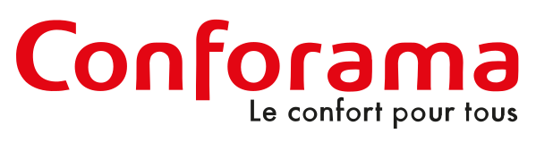
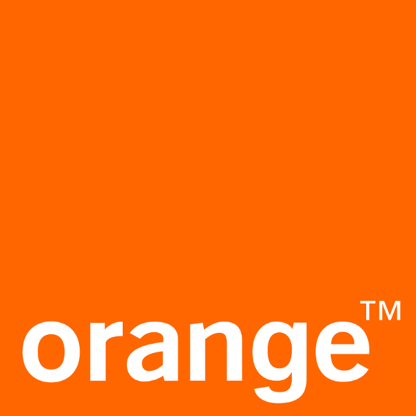
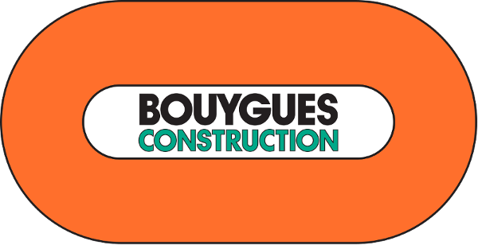
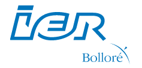
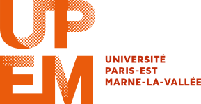
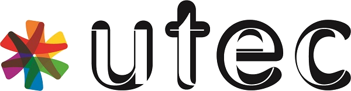

Passionné des nouvelles technologies, j'ai accompagné de grands groupes français dans la réalisation de leurs projets IT.
Mes compétences en réalisation et en gestion de projets informatiques m'ont permis de piloter des équipes de développeurs dans l'évolution fonctionnelle et technique de CRM et autres sites de e-commerce.
Pratiquant la veille informatique, membre de l'association April et rédacteur d'un blog sur les logiciels libres, je contribue également au projet PluXml.org. Passionné de cinéma et de musique je n'oublie pas de mettre mon temps libre à contribution pour pratiquer la guitare électrique.
- Email : contact@pedrocadete.fr
- Adresse : Ile de France
- Age : 28 ans
Compétences
Gestion de projet
Utilisation des méthodologies Agiles (SCRUM, Kamban) en assumant le role du Product Owner ou du Scrum Master.
Plannification, étude du besoin, conception et chiffrage des solutions techniques. Rédaction des user stories, gestion du backlog, pilotage des développeurs et de la réalisation.
Ingénierie informatique
Architecture et administration système
GNU/Linux, Nginx, Apache, Memcached, MongoDB, Squid
Sécurité Web
HTTPS, SSL, chiffrement, Let's Encrypt
Réseaux et protocoles
routage IP, VLAN, HTTP, FTP, SSH
Développement Web frontend
HTML, CSS, Javascript
Développement Web backend
JAVA, PHP
Outils
Jira, Confluence, Redmine, Mingle, Icescrum, Eclipse, IntelliJ, Bracket, Atom, Postman, Gitlab, Bitbucket, Rundeck, Jenkins, Gimp, Libre Office, Microsoft Office, Slack, Teams
Langues
Bilingue Français-Portugais
Anglais (TOEIC 805/990)
Expérience
7 ans d'experience professionnelle Chef de projets technique
Scrum Master
Avril 2018 - Aujourd'hui
Chef de projets technique et Scrum Master sur la plateforme Hybris e-commerce (conforama.fr). Gestion de projets et pilotage d'une équipe de développeurs en méthodes Agiles SCRUM. Participation aux études de cadrage, définition des solutions techniques, pilotage de la réalisation et gestion de la TMA. Mise en place des outils Jira, Confluence et Git au sein de la DSI Web.
Product Owner
Septembre 2015 - Mars 2018Chef de projets MOE sur les applications web de vente en ligne (sfr.fr). Gestion et réalisation de projets. Pilotage d'une équipe de développeurs en méthodes Agiles SCRUM et Kamban.
Chef de projets transverses
Septembre 2013 - Aout 2015Gestion de projets impactant plusieurs applications au sein du système d'informations de Numéricable (e-commerce, selfcare, CRM, facturation, activation et raccordements). Gestion des projets blanches SFR, RED et Virgin.

Responsable Fonctionnel SI
Septembre 2010 - Aout 2013Chef de projets MOA et responsable du domaine fonctionnel Client et Sollicitation sur le CRM d’Orange Business Service.

Technicien réseau
Septembre 2009 - Aout 2010Stage de 8 semaines dans le cadre d'un BTS Informatique de Gestion.

Chef de projet SI
Septembre 2008 - Aout 2009Stage de 6 semaines dans le cadre d'un BTS Informatique de Gestion.
Diplômes
Master Management de la Qualité, de la Sécurité et de l'Environnement
Université Paris Est, Marne La Vallée - Seine et Marne (2010 - 2013)Gestion de projets (méthodes Agiles, ITIL), normes ISO, management d'équipe, entrepreunariat, droit et finance
Master Management des Ingénieries Informatique
Université Technologique de l'Enseignement Consulaire - Seine et Marne (2010 - 2013)Pilotage de projets SI, gestion des équipes de développement, ingénierie réseau et système informatique. Ecole appartenant à la Chambre du Commerce et de l'Industrie de Seine et Marne.
Réalisations
 pedrocadete.fr est sous licence Creative Commons Attributions.
pedrocadete.fr est sous licence Creative Commons Attributions.